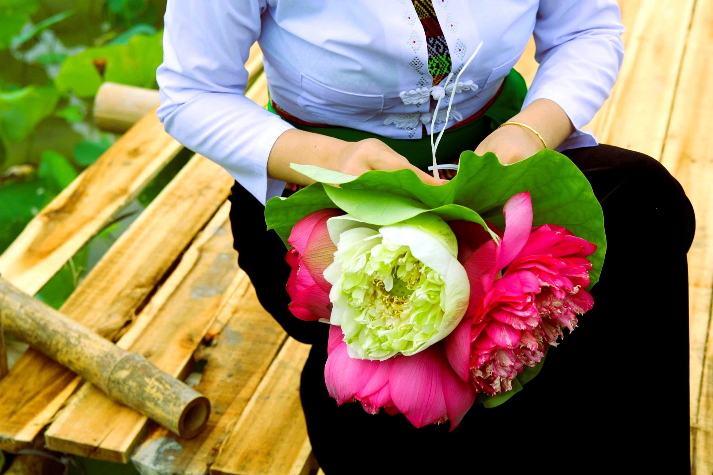

Loại hìnhTypeType
Điểm trải nghiệmExperience spotPoint d'expérience

Đầm sen Nguyệt Farm là một trong những điểm check-in nông nghiệp đẹp nhất của Mường Cốc mỗi khi mùa sen về. Bà Nguyễn Thị Nguyệt và gia đình canh tác đầm sen tại thôn Đức Dương, nơi từ tháng 6 đến tháng 8 hằng năm, những bông sen hồng nở rộ trải dài tạo nên khung cảnh thơ mộng đặc trưng của vùng đất Mỹ Đức.
Du khách đến Đầm sen Nguyệt Farm không chỉ để chụp ảnh check-in mà còn được tham gia trực tiếp vào các hoạt động: lẩy hạt sen, quan sát quy trình làm trà sen thủ công và tìm hiểu về giá trị nhiều mặt của cây sen trong đời sống người Mỹ Đức.
Cánh đồng sen mùa nở rộ là một trong những hình ảnh biểu tượng của Mường Cốc – nơi thiên nhiên và sinh kế nông nghiệp cùng tồn tại hài hoà và trở thành tài nguyên du lịch cộng đồng đặc sắc.
Nguyet Farm Lotus Pond is one of Muong Coc's most beautiful agricultural check-in spots when lotus season arrives. Mrs. Nguyen Thi Nguyet and her family cultivate the lotus pond in Duc Duong village, where from June to August each year, blooming pink lotus flowers stretch across the landscape, creating a poetic scene characteristic of My Duc.
Visitors to Đầm sen Nguyệt Farm don't just come for check-in photos; they also directly participate in activities like harvesting lotus seeds, observing the handcrafted lotus tea-making process, and learning about the multifaceted value of the lotus plant in the lives of Mỹ Đức people.
The blooming lotus field is one of Muong Coc's iconic images – where nature and agricultural livelihoods coexist harmoniously, becoming a unique community tourism resource.
L'étang de lotus de la ferme Nguyệt est l'un des plus beaux points de repère agricoles de Mường Cốc à chaque saison des lotus. Mme Nguyễn Thị Nguyệt et sa famille cultivent l'étang de lotus dans le village de Đức Dương, où de juin à août chaque année, les fleurs de lotus roses épanouies s'étendent, créant un paysage poétique caractéristique de la région de Mỹ Đức.
Les visiteurs de Đầm sen Nguyệt Farm ne viennent pas seulement pour des photos "check-in" ; ils participent aussi directement à des activités comme la récolte des graines de lotus, l'observation du processus artisanal de fabrication du thé de lotus, et la découverte de la valeur multifacette de la plante de lotus dans la vie des habitants de Mỹ Đức.
Le champ de lotus en pleine floraison est l'une des images emblématiques de Muong Coc – où la nature et les moyens de subsistance agricoles coexistent harmonieusement, devenant une ressource touristique communautaire unique.
| Chụp ảnh đầm senLotus Pond PhotographyPhotographie de l'Étang aux Lotus | Không gian sen nở rộ, tự do chụp ảnh và check-inA blooming lotus space, perfect for photos and check-ins.Un espace de lotus en fleurs, idéal pour les photos et les enregistrements. |
| Trải nghiệm lẩy hạt senExperience harvesting lotus seedsExpérience de récolte des graines de lotus | Tự tay lấy hạt sen từ đài sen tươiHarvest lotus seeds by hand from fresh podsRécoltez vous-même les graines de lotus des gousses fraîches |
| Làm trà sen (theo mùa)Make lotus tea (seasonal)Fabrication de thé de lotus (saisonnier) | Quan sát hoặc tham gia ướp trà sen thủ côngObserve or join in the artisanal process of infusing lotus tea.Observez ou participez au processus artisanal d'infusion du thé au lotus. |
| Mua sắm đặc sản senDiscover Lotus DelicaciesDécouvrez les spécialités à base de lotus | Hạt sen, trà sen, tâm sen, lá sen đóng góiPackaged lotus seeds, lotus tea, lotus plumule, lotus leavesGraines de lotus, thé de lotus, germe de lotus, feuilles de lotus emballés |
| Đón khách đoànGroup WelcomeAccueil de groupes | Phù hợp đoàn gia đình, nhóm bạn, đoàn chụp ảnhSuitable for family groups, friends, and photography tours.Convient aux groupes familiaux, aux groupes d'amis, aux groupes de photographes. |


Đầm sen Nguyệt Farm hướng tới phát triển thành điểm trải nghiệm nông nghiệp – check-in thiên nhiên đặc trưng của Mường Cốc mùa hè, gắn liền với sản phẩm sen chất lượng cao. Bà Nguyệt và gia đình mong muốn hoạt động du lịch góp phần tăng giá trị canh tác và giúp nhiều người hơn biết đến vẻ đẹp và giá trị của cây sen vùng Mỹ Đức. Điểm đến Du lịch cộng đồng Mường Cốc, Xã Mỹ Đức – Thành phố Hà NộiNguyet Farm Lotus Pond aims to develop into a characteristic agricultural experience and nature check-in point for Muong Coc in summer, linked to high-quality lotus products. Ms. Nguyet and her family hope that tourism activities will help increase cultivation value and raise awareness of the beauty and value of the lotus plant in the My Duc region. Muong Coc Community-Based Tourism Destination, My Duc Commune – Hanoi City.L'étang de lotus de Nguyệt Farm vise à devenir un point d'expérience agricole et de « check-in » nature caractéristique de Mường Cốc en été, lié à des produits de lotus de haute qualité. Mme Nguyệt et sa famille espèrent que les activités touristiques contribueront à augmenter la valeur de la culture et à faire connaître la beauté et la valeur de la plante de lotus dans la région de Mỹ Đức. Destination de Tourisme Communautaire Mường Cốc, Commune de Mỹ Đức – Ville de Hà Nội.